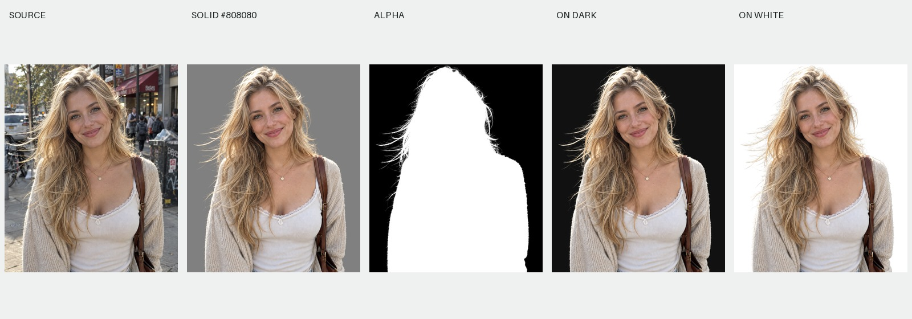
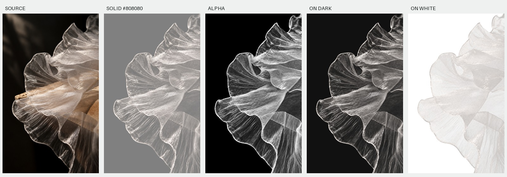

配对遮罩 · 半透明抠图Paired Matte
配对遮罩半透明抠图
ChatGPT 网页生图流程、可复制 Skill、本地网页、历史案例与新增网页版实测案例。
原图 → 纯色底图 → 以纯色图生成 Alpha → 对齐检查 → 去底色与微调 → 透明 PNG
5 组演示可查看完整文件，其中两组为新增网页版流程实测。模型 Alpha 没有真值；半透明与光效的质量需在目标背景下判断。
写实金发人物
1145 × 1374 · 2026-09-17 网页版生成配对图，Safari 本地工具导出

案例说明 · 原图 · 纯色图 · 遮罩 · 透明 PNG
珍珠白半透明纱物
973 × 1616 · 2026-09-17 网页版生成配对图，Safari 本地工具导出

案例说明 · 原图 · 纯色图 · 遮罩 · 透明 PNG